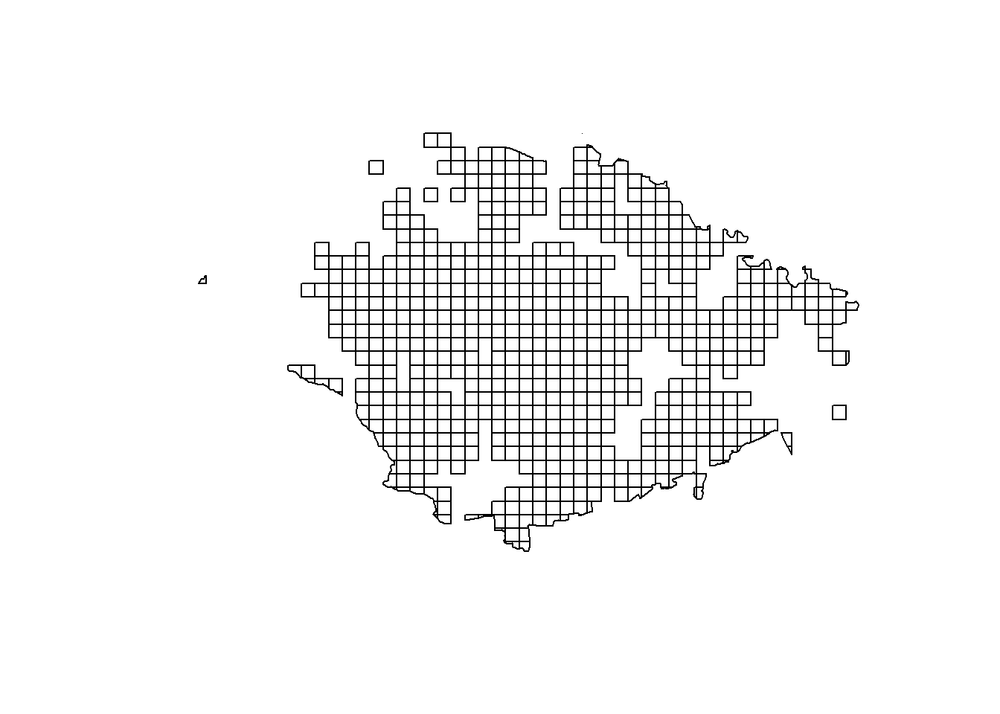
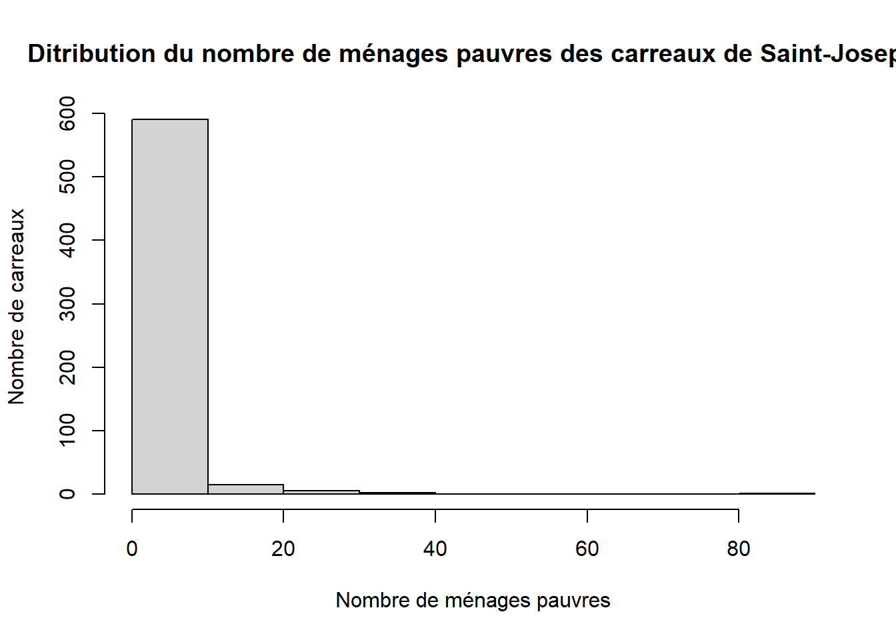
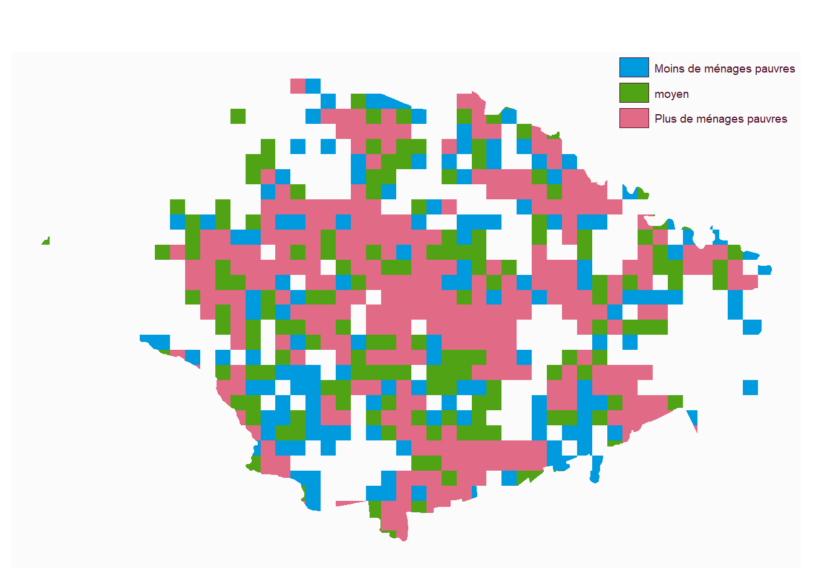
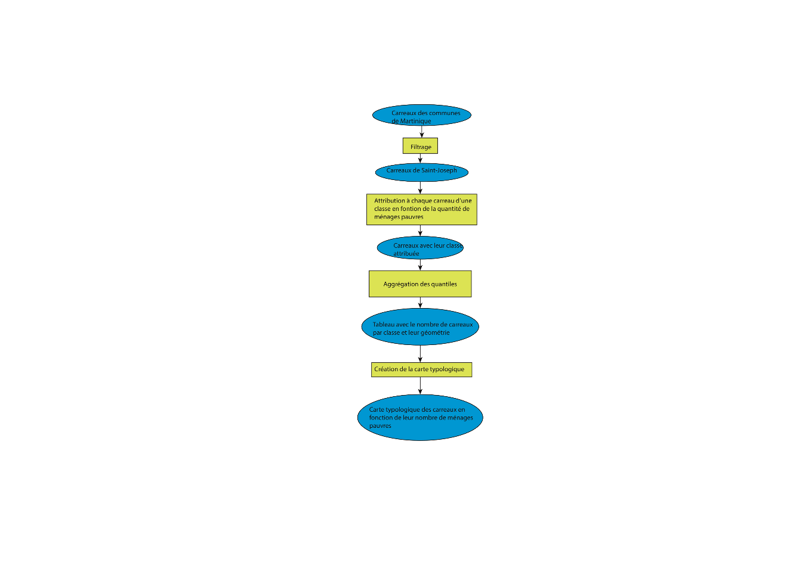
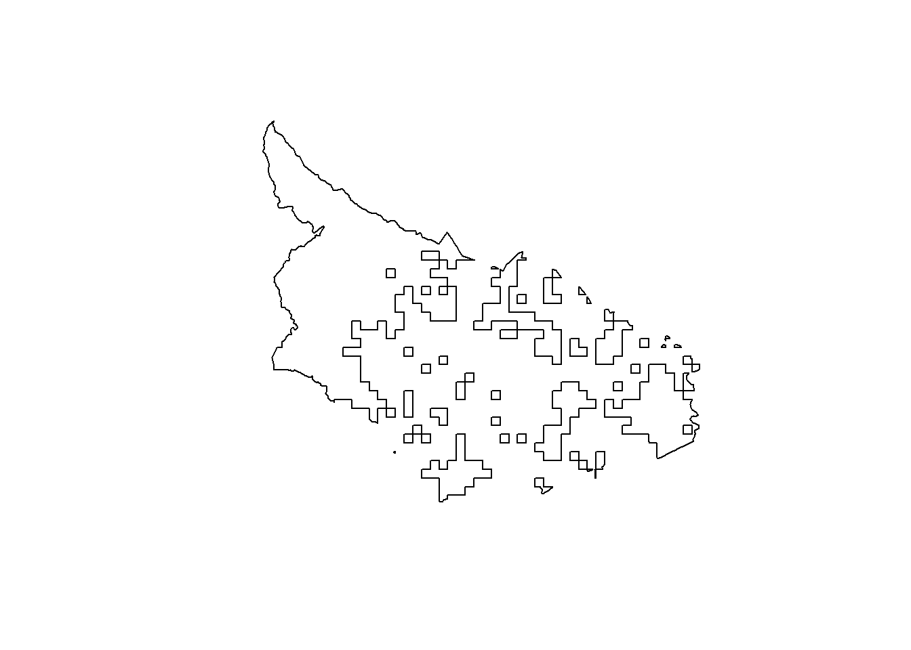

#permet de gérer les gpkg
library(sf)
#permet de faire des maps
library(mapsf)
library(happign)
library(terra)
library(imager)car <- st_read("base.gpkg", "car97", quiet=T)
carST <- car [car$code == 97224,]
plot(carST$geom)
Cette première carte représente le découpage du territoire de Saint-Joseph en carreaux. Ce maillage permet d’analyser les données à une échelle fine, en distinguant de petites zones à l’intérieur de la commune. Ce type de représentation est utile pour observer précisément la répartition des phénomènes sociaux, comme la pauvreté. On remarque que le territoire est découpé de manière homogène (carreaux de même taille), ce qui permet ensuite de comparer les différentes zones entre elles.
carST <- carST [, "men_pauv"]
hist(carST$men_pauv,
main = "Ditribution du nombre de ménages pauvres des carreaux de Saint-Joseph",
xlab = "Nombre de ménages pauvres",
ylab = "Nombre de carreaux")
summary(carST$men_pauv)## Min. 1st Qu. Median Mean 3rd Qu. Max.
## 0.000 0.600 1.500 3.032 4.000 82.000L’histogramme présente la distribution du nombre de ménages pauvres dans les différents carreaux. On observe que la majorité des zones ont un faible nombre de ménages pauvres, comme le montrent les barres élevées à gauche du graphique. À l’inverse, seules quelques zones présentent un nombre beaucoup plus élevé de ménages pauvres, ce qui apparaît avec les barres plus faibles à droite. La moyenne (environ 3) est supérieure à la médiane (1,5), ce qui s’explique par la présence de valeurs élevées dans certaines zones. Le maximum atteint 82, ce qui montre qu’il existe des écarts importants. Ainsi, la pauvreté est inégalement répartie sur le territoire, avec quelques zones particulièrement touchées.
quantile <- quantile(carST$men_pauv, na.rm = T)
carST$men_pauv_rapport <- "moyen"
carST$men_pauv_rapport [carST$men_pauv < quantile [2]] <- "Moins de ménages pauvres"
carST$men_pauv_rapport [carST$men_pauv > quantile [3]] <- "Plus de ménages pauvres"
table(carST$men_pauv_rapport)##
## Moins de ménages pauvres moyen Plus de ménages pauvres
## 149 162 302rapport <- aggregate(carST [, c("men_pauv_rapport")], by = list(carST$men_pauv_rapport), length)
mf_map(rapport, type = "typo", var = "Group.1", border= NA, leg_title = "")
Cette carte montre la répartition des ménages pauvres à Saint-Joseph, à partir des données de l’INSEE. Les zones ont été classées en trois catégories : moins de ménages pauvres, moyen et plus de ménages pauvres. On observe que les zones les plus touchées (en rose) sont concentrées dans certains espaces, tandis que d’autres zones sont moins concernées (en bleu). On remarque également qu’il existe un nombre important de carreaux appartenant à la catégorie “plus de ménages pauvres”, ce qui montre que certaines zones concentrent davantage la pauvreté. Cependant, cette observation peut sembler différente de celle de l’histogramme, qui montrait que la majorité des zones avaient peu de ménages pauvres. Cela s’explique par le fait que la carte regroupe les données en catégories, ce qui met davantage en valeur les zones les plus touchées. Cela met en évidence une répartition inégale de la pauvreté au sein de la commune. La pauvreté n’est donc pas homogène, mais varie selon les espaces, ce qui traduit l’existence d’inégalités sociales locales.
image <- load.image("schéma_ménages.png")
plot(image, axes = FALSE)
car2 <- st_read("base.gpkg", "carreau_manquant97", quiet=T)
carST2 <- car2 [car2$code == 97224,]
plot(carST2$geom)
Cette dernière carte met en évidence certaines zones pour lesquelles les données sont absentes ou incomplètes. Ces absences de données peuvent s’expliquer par le fait que certains carreaux correspondent à des zones peu ou pas habitées, ce qui signifie qu’il n’y a pas de population à analyser. Cela montre une limite de l’analyse : toutes les zones du territoire ne sont pas renseignées, ce qui peut biaiser légèrement les résultats. Certaines parties de la commune sont donc moins bien représentées. Il est donc important de prendre en compte ces limites lorsqu’on interprète les résultats, même si les grandes tendances restent visibles.